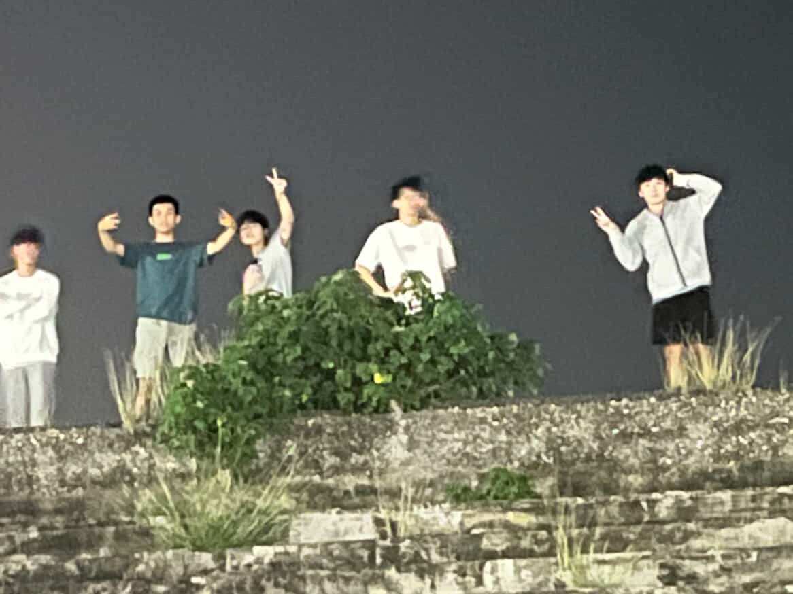

攝於民雄鬼屋

攝於七股最北邊廁所
我是誰？
我叫張仕誠，出生於民國96年3月12日（2007年），在台灣台南出生，目前 18 歲。
我曾就讀於台南市大新國小與新化國中，現就讀於南台科技大學五專部資訊工程三年級。
音樂經歷
從國小到國中我都是管樂團成員，參加多場比賽，並取得以下佳績：
- 108 年全國預賽資格
- 108 年全國決賽 國中 A 組 — 優等
- 109 年全國預賽資格
- 109 年全國決賽 國中 A 組 — 優等
- 前往許多場地演出
興趣與專長
我對電腦程式非常有熱情，喜歡亂寫網站和學習新技術，也喜愛騎車，
相機攝影拍照及手機隨手記錄生活。
以後想考取消防警察，目前已考取 EMT-1(緊急救護初級急救員)

攝於七股的日出
攝於台南沙漠

攝於大崗山

攝於親水公園